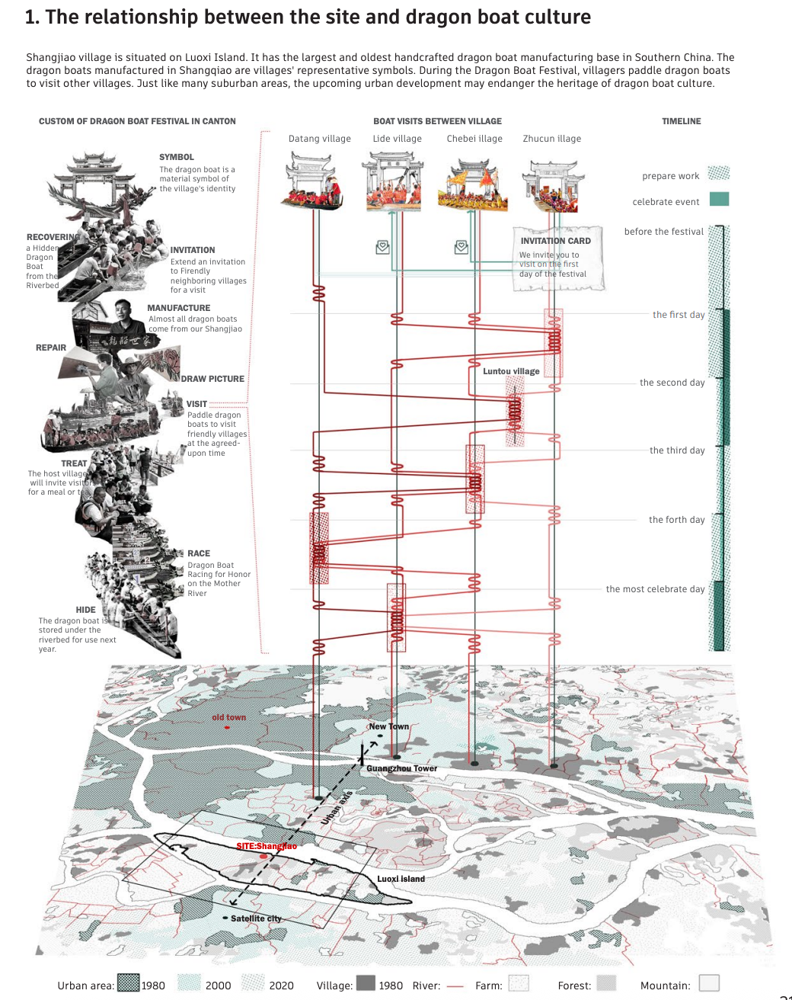
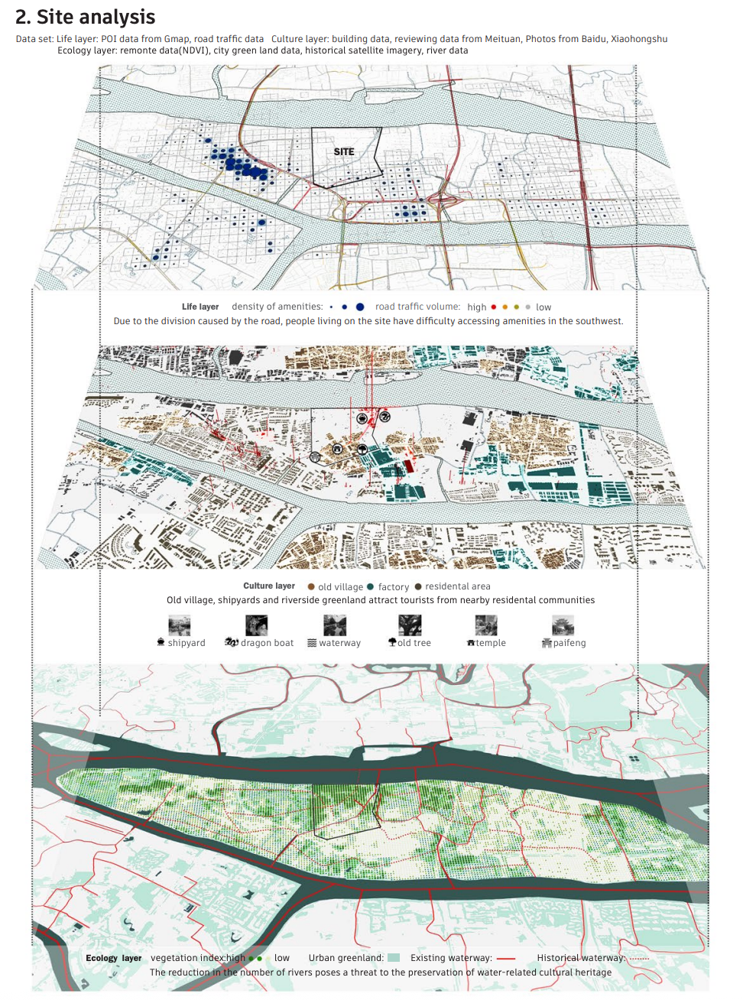
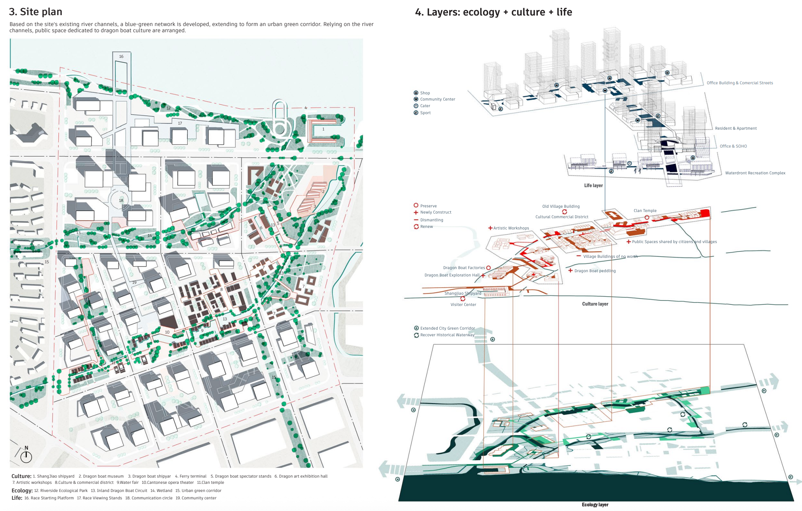
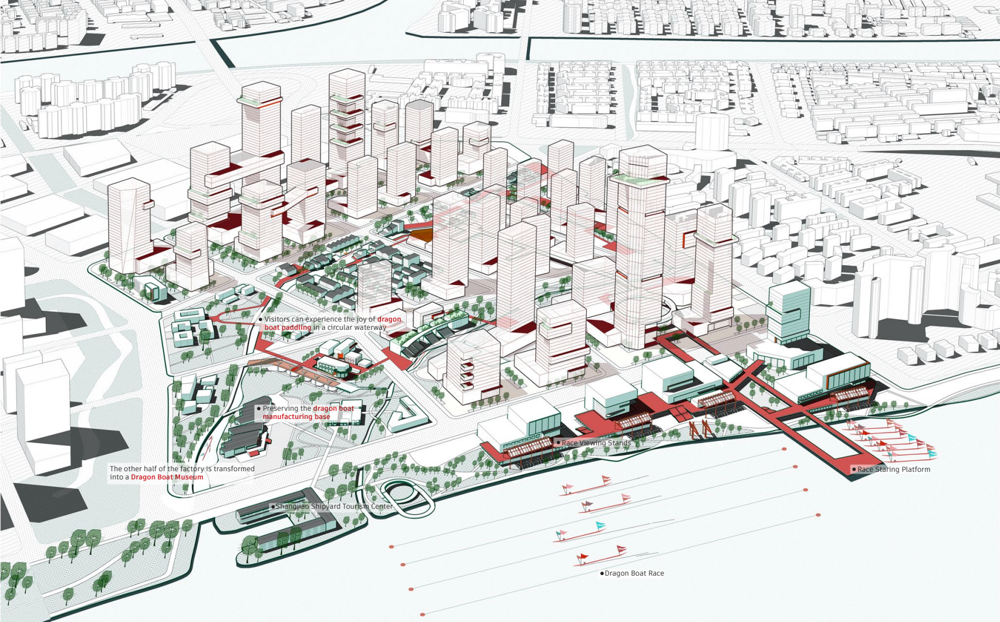

设计简介：珠江密布的河网孕育了龙舟为代表的水乡文化。位于广州番禺洛浦岛的上漖村拥有百年龙舟制造基地，其制作龙舟成为村落端午节联谊的精神载体。场地位于广州城市中轴南端，因其重要区位亟待旧改，文化传承面临危机，村民精神家园也因此丢失。同时，洛浦岛因开发年限早，存在生态破坏，配套缺失，用地零散、交通不便的问题。城市设计基于水系和文化引导开发，从而实现发展和文化的共赢。设计基于历史资料还原场地河涌原貌，重构龙舟文化的河道空间和蓝绿骨架。依河道布置龙舟文化节点，形成龙船历史游径和水上交通的出行方式。通过组织系列主题活动唤醒文化记忆，构建龙舟手工艺和水系文化的精神家园。
广州密布的水网诞生了本土的龙舟文化。龙舟是每个村落的象征，每逢端午，村民会划龙舟沿水路到其他村落拜访。整个活动持续半个月左右，发展出一套别具特色的仪式。

场地有中国南方最大的手工龙舟制作基地，与龙舟文化密切相关
随着城市的扩张，原来位于郊区的场地被纳入发展规划中。由于开发时间较早，缺少规划，场地面临用地零散，交通不便，配套缺失，生态破坏等问题。

场地分析
城市设计方案基于原有河道重构了蓝绿空间骨架，成为居民休憩娱乐的场所，依靠水系散步文化节点，从而保育和发展龙舟文化。

城市设计平面和设计的三种空间展示
（蓝色：居住与商业空间；红色：文化保育空间包括博物馆工坊创作室；绿色：水系绿地等休憩空间）

鸟瞰效果图
The dense river network of the Pearl River has nurtured a water-related culture, exemplified by the Dragon Boat Festival activities. Shangjie Village in Luopu Island, famous for its century-old dragon boat manufacturing base. The creation of dragon boats here has become a spiritual symbol for the village's Dragon Boat Festival visitings. However, this heritage is in danger as the dragon boat base will be removed in the upcoming urban regeneration. Additionally, Luopu Island, since developed early, faces problems such as ecological damage, lack of amenities and public spaces. Our urban design is guided by ecological and cultural principles. Based on historical materials, the original appearance of the site's river channels is restored. Along these waterways, public space nodes showing water-related culture are arranged. The dragon boat manufacturing base is preserved, introducing tourists with the local dragon boat culture. The introduction of various business types such as cultural tourism, workshops, markets, and offices, along with enhanced public services, aims to build a community for both villagers, tourists, and residents.
Guangzhou’s extensive network of waterways has given rise to a distinctive local dragon boat culture. The dragon boat serves as a symbol of each village, and every Dragon Boat Festival, villagers row their dragon boats along the waterways to visit neighboring villages. The festivities last for about two weeks and have developed into a unique set of rituals.
The site is home to the largest handmade dragon boat manufacturing base in southern China and is closely associated with dragon boat culture
As the city has expanded, sites that were once located in the suburbs have been incorporated into development plans. Because these areas were developed early on and lacked proper planning, they now face issues such as fragmented land use, poor transportation access, a lack of supporting facilities, and ecological damage.
Site Analysis
The urban design plan reimagines the existing river system to create a framework of blue and green spaces, transforming it into a place for residents to relax and enjoy recreational activities. By establishing cultural hubs along the waterways, the plan aims to preserve and promote dragon boat culture.
Urban Design Plan and Three Types of Spatial Displays
(Blue: Residential and commercial spaces; Red: Cultural heritage spaces, including museums, workshops, and studios; Green: Recreational spaces such as waterfront areas and green spaces)
Aerial view rendering
[] []